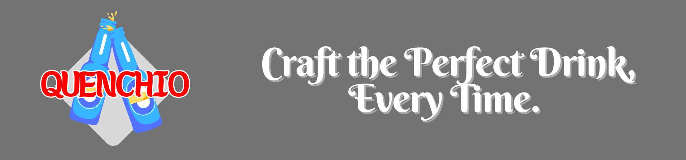

Quenchio

Important Discalimer: This is meant to be an informative app, and not something that promotes alcoholism.
This app is in it's early development phase, so the deployment might take a while.
Quenchio - Your Guide to Learning Mixology.
This app is meant to introduce various drinks to the user. It provides the recipe for making drinks - both alcoholic and non alcoholic kinds.
There won't be any ads like in my previous apps, since monetization isn't in my plans for this app. I'll also be trying to have a simple and aesthetic UI in the app. The user will also have to consent to using this app when opening for the first time, since alcoholism isn't promoted in any way through the usage of this app. It's purpose is to let the users know the recipes to various kinds of drinks out there.
The app will be made using Flutter, and as of now the plans for this app doesn't call for a backend service. Periodic updates will be released in order to bring in more recipes, if available.